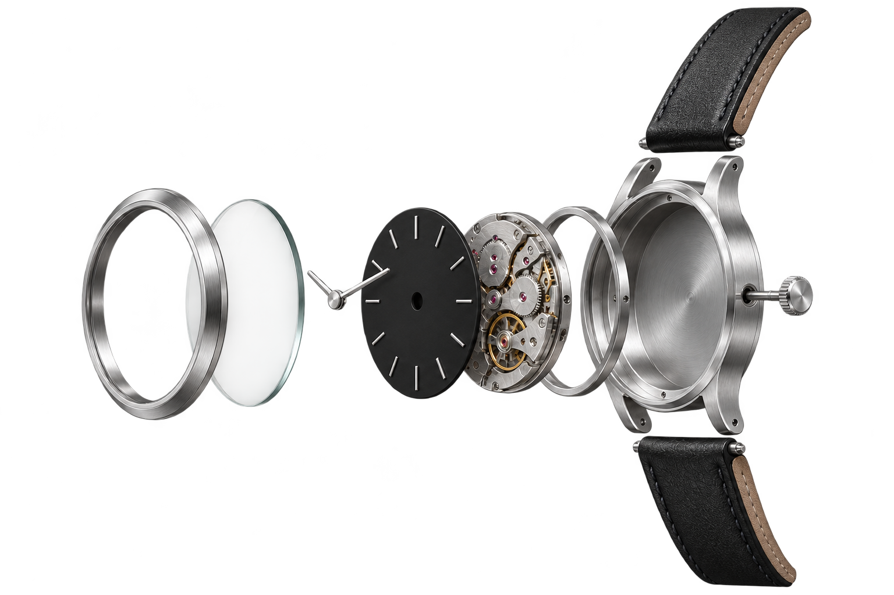

Корпус
Матовая сталь с мягким сатиновым блеском.
NOIR 01 / Коллекция
Точная форма. Тихий характер. Часы, в которых каждая деталь на своём месте.
Рассмотреть модельNOIR 01 / Форма
Сталь, чёрный циферблат и кожа. Посмотри, как детали отделяются от корпуса.
NOIR 01 / Механизм
Стекло, циферблат и механизм раскрываются по очереди. Рассмотри, как они соединяются внутри корпуса.
NOIR 01 / Детали
Сдержанный силуэт, продуманные пропорции и фактуры, которые хочется рассматривать.

Матовая сталь с мягким сатиновым блеском.
Глубокий чёрный цвет и тонкие часовые метки.
Фактура чёрной кожи и аккуратная прострочка.
NOIR / Коллекция 01
NOIR 01 — концепт часов, созданный для демонстрационного проекта.
Вернуться к началу